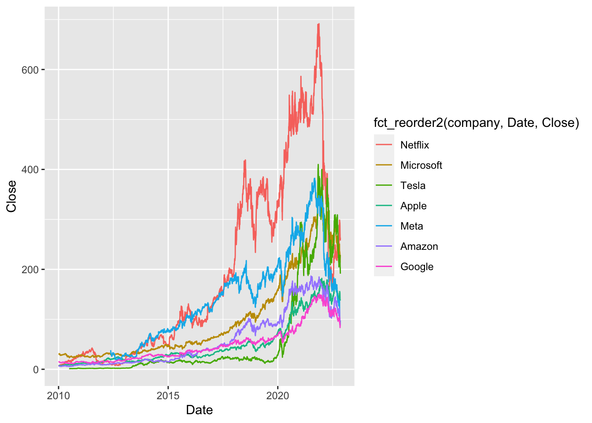
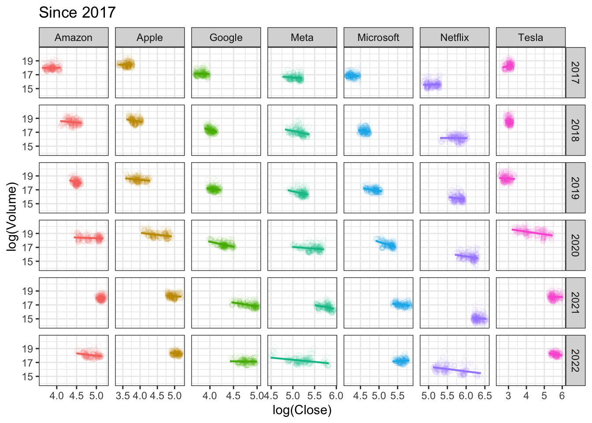

DANL 200: Introduction to Data Analytics
DANL 200 - Homework Assignment 3 - Example
Answers
Byeong-Hak Choe
2022-12-09
Loading R packages for Homework Assignment 3
library(tidyverse)
library(lubridate)
library(ggthemes)Question 1
Read the data file, NY_school_enrollment_socioecon.csv,
as the data.frame object with the name, NY_pincp, using (1)
the read_csv() function and (2) its URL,
https://bcdanl.github.io/data/NY_school_enrollment_socioecon.csv.
url <- 'https://bcdanl.github.io/data/NY_school_enrollment_socioecon.csv'
NY_school_enrollment_socioecon <- read_csv(url)For description of variables in
NY_school_enrollment_socioecon, refer to the file,
ny_school_enrollment_socioecon_description.zip, which is in
the Files section in our Canvas web-page. (I recommend you to extract
the zip file, and then read the file,
ny_school_enrollment_socioecon_description.csv, using Excel or
Numbers.)
Q1a
Look up the meaning of variable pincp from the
data.frame, NY_pincp. Create the data frame,
NY_pincp, which has only the following four variables from
NY_school_enrollment_socioecon:
fipsyearcounty_namepincp
NY_pincp <- NY_school_enrollment_socioecon %>%
select(fips:pincp)
NY_pincpQ1b
Create the data frame, NY_pincp_wide, which has one
observation for each county (62 observations in total) and the following
eight variables:
fips: ID number for countycounty_name: County Namepincp2015: Annual personal income in year 2015pincp2016: Annual personal income in year 2016pincp2017: Annual personal income in year 2017pincp2018: Annual personal income in year 2018pincp2019: Annual personal income in year 2019pincp2020: Annual personal income in year 2020
NY_pincp_wide <- NY_pincp %>%
pivot_wider(names_from = year,
values_from = pincp,
names_prefix = 'pincp')Q1c
Use the data.frame NY_pincp_wide from Q1b to create the
data frame, NY_pincp_long, which has six observations for each county
(372 observations in total) and the following four variables:
fips: ID number for countyyear: integer variable of year (e.g., The possible values ofyearare 2015, 2016, 2017, 2018, 2019, and 2020.)county_name: County Namepincp: Annual personal income
# (1) using separate()
NY_pincp_long <- NY_pincp_wide %>%
pivot_longer( cols = pincp2015:pincp2020,
names_to = "year",
values_to = "pincp") %>%
separate(year, into = c("dum", "year"),
sep = "pincp", convert = T) %>%
select(-dum)
# () using str_replace()
NY_pincp_long <- NY_pincp_wide %>%
pivot_longer( cols = pincp2015:pincp2020,
names_to = "year",
values_to = "pincp") %>%
mutate( year = str_replace(year, "pincp", ""),
year = as.integer(year) )Q1d
Create the data.frame, NY_pincp_geo, by join the two
data.frames, NY_county_geo and NY_pincp.
NY_county_geo <- read_csv('https://bcdanl.github.io/data/NY_county_geo.csv')The data.frame, NY_pincp_geo, must include all the
observations and variables in the data.frame,
NY_county_geo.
NY_pincp_geo <- NY_county_geo %>%
left_join(NY_pincp, by = c("FIPS" = "fips"))Q1e
In the following ggplot code with geom_polygon(),
replace the blanks ([?]) with the appropriate object to draw a yearly
county map of pincp.
# ggplot(data = [?]) +
# geom_polygon(mapping = aes(x = [?], y = [?], group = group,
# fill = [?] ) ,
# color = "grey", size = 0.1) +
# facet_wrap( [?] ) +
# labs( title = "Income in NY State" ) +
# coord_map("bonne", parameters = 41.6) + # for better aspect ratio
# scale_fill_gradient2( # mapping pincp rate to color level
# low = 'red',
# high = 'blue',
# na.value = "grey50",
# midpoint = quantile(
# NY_school_enrollment_socioecon$pincp, 50)) +
# theme_map() + # a better theme for map drawing
# theme(legend.position='top') ggplot(data = NY_pincp_geo) +
geom_polygon(mapping = aes(x = long, y = lat, group = group,
fill = pincp ) ,
color = "grey", size = 0.1) +
facet_wrap( ~ year ) +
labs( title = "Average Income in NY Counties, 2015-2020",
caption = "Source: Breau of Labor Statistics") +
coord_map("bonne", parameters = 41.6) + # for better aspect ratio
scale_fill_gradient2( # mapping pincp values to color levels
low = 'red',
high = 'blue',
na.value = "grey50",
midpoint = quantile(
NY_school_enrollment_socioecon$pincp, .50),
name = "Average Income") +
theme_map() + # a better theme for map drawing
theme(legend.position= "bottom",
plot.title = element_text(hjust = .5, size = 16,
color = "purple"),
strip.background = element_rect(color = 'white',
fill = 'white')) 
Question 2
Read the data file, tech_stock.csv, as the data.frame
object with the name, tech_stock, using (1) the
read_csv() function and (2) its URL,
https://bcdanl.github.io/data/tech_stock.
tech_stock <- read_csv("https://bcdanl.github.io/data/tech_stock.csv")Q2a
Describe the daily trend of Close for each company since
2010 in one ggplot.
ggplot(filter(tech_stock, Date > ymd("2010-01-01")),
aes(x = Date, y= Close,
color = company)) +
geom_line()
ggplot(filter(tech_stock, Date > ymd("2010-01-01")),
aes(x = Date, y= Close,
color = fct_reorder2(company, Date, Close))) +
geom_line()
Q2b
- Describe the relationship between
log(Close)andlog(Volume)for the companies intech_stock.
p0 <- ggplot(tech_stock ,
aes(x = log(Close), y = log(Volume)) )
p0 + geom_point(alpha = .05,
shape = 1,
aes(color = company)) + geom_smooth(method = lm) +
guides(colour = guide_legend(override.aes = list(alpha=1)))
Q2c
Does the relationship between log(Close) and
log(Volume) vary by companies and by the time periods?
# all years
p0 <- ggplot(tech_stock ,
aes(x = log(Close), y = log(Volume),
color = company) )
p0 + geom_point(alpha = .05,
shape = 1) + geom_smooth(method = lm) +
facet_grid(.~company) +
theme_minimal()+
labs(title = "All years") +
theme_bw() +
guides(color = "none")
# since 2017
tech_stock2 <- tech_stock %>%
filter(Date >= ymd("2017-01-01")) %>%
mutate(year = year(Date))
p0 <- ggplot(tech_stock2 ,
aes(x = log(Close), y = log(Volume),
color = company) )
p0 + geom_point(alpha = .075,
shape = 1) +
geom_smooth(method = lm, se = F, size = .75) +
facet_grid(year~company, scales = "free_x") +
labs(title = "Since 2017") +
theme_bw() +
guides(color = "none")